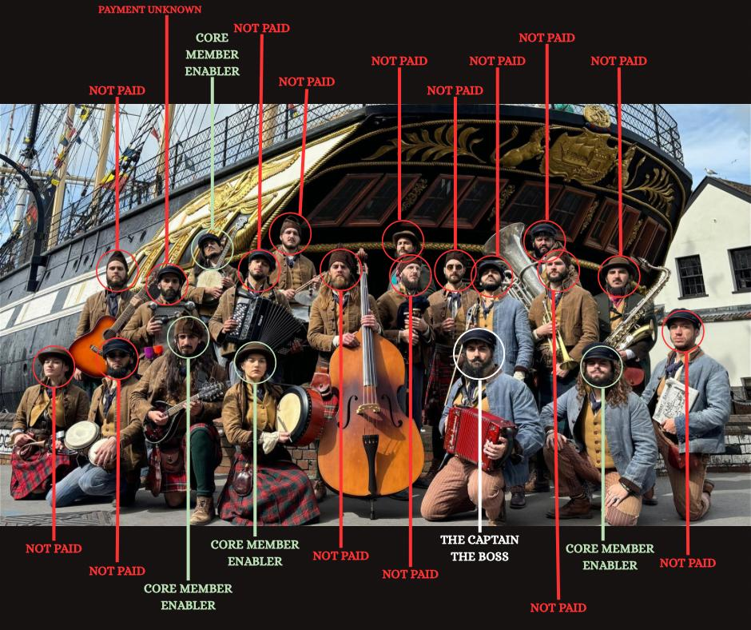

The purpose of this informational webpage is to ensure the public and the venues that supported and employed ‘The Old Time Sailors LTD’ are
fully aware of the business practices employed by Mr Andres Nicolás Guzman and the core associates of this band.
Here is your band from 2024.
We have noted those who weren’t paid for you.
The core members are;
Mr Andres Nicolás Guzmán (aka Captain Nick), Patricio Estaban Manifesto Sarmiento, Ms Katie Richards, Brisa Vigna, José Ignacio Cantin Pizarro, Lázaro Ezequiel Infante Molina, Andres Martinez Dalke, Ángel Manuel Gonzalez and Josefina Duvieilh. These are the members that were fully aware of what was happening in the group and were complicit in the threatening and controlling behaviour, duplicity, with no regard as to knowing these band members were never going to be paid!

The picture above is the band members from last year (2024). For clarity, we have identified those who were NOT paid.
Not in the picture is the band manager Ms Katie Richards, Sound Engineers, Mechanics, Photographers or the cook Ángel Manuel Gonzalez.
The Core Members
Core Members
Andres Nicolás GuzmánKatie RichardsAndres DalkePatricio Manifesto
PLEASE TAKE THE TIME TO READ THIS WEBPAGE, why it exists AND MAKE YOUR OWN MIND UP.
Please consider supporting the unpaid 2024 band members that were unpaid by Old Time Sailors Ltd.
Donate to the GoFundMe page established to support the unpaid musicians and crew from 2024: 👉
There are 13 active court cases in Argentina regarding unpaid wages and 1 cival/penal lawsuit from the 2021, 2022 and 2024 tours. 3 in the case of the 2021 tour, 1 in 2022 and 10 against the 2024 tour.
Argentina Court Cases
The Police investigations is still active but to date, they have failed to prosecute any of these individuals. Given the mountain of evidence against them and the fact that 2 individuals were deemed to be victims of Modern Day Slavery by the National Referral Mechanism, it's beyond belief that they let these individuals leave the country without prosecution. However it is widely reported how victims of modern day slavery are often failed by the system, so this case is another addition to this mounting data. The only person remaining in the UK is Katie Richards. Why hasn't she been prosecuted?
Allegedly Mr Guzmán informed the band of various reasons for not being paid, some excuses we know to be lies, but the main one being that the tour went really badly.
We ask you wonderful fans that came to the shows last year, did they look like a flop, or did they look like sell-out shows?
It's estimated that from the 228 shows in 180 days that this band performed, the prices of most gigs ranged from £1500-£6000. With the merchandise
sales included the maths of this means Mr Guzmán’s revenue would have been around £500k, yet was unable to pay these members for working every day, which when you add up travel time amounts to 90hrs plus of work a week.
How would the hard working people of the UK feel if you worked for 7 days a week for 6 months solid with virtually no breaks in between shows and at the end of all that hard work, Mr Guzmán pays you nothing? In fact, it’s worse than that as all of these people that haven’t been paid have also funded to their own return flights from Argentina of around on average £1200 which was never reimbursed, plus the charge of extending their ticket for the full 6 months which ranged between £500-£1000. One could allege that this looks very much like modern day slavery!
The vast majority of these band members are of Argentinian nationality and therefore have no voice in this country with regards to any legal action that they may wish to take against Mr Guzmán.
Who are we you may ask?
We are a collective that have come together to help the victims who currently have no voice after the abuse they endured under the rule of Mr Guzmán and those who enable him.
Our reason for doing this is because you, the public, and more importantly the fans as well as the venues employing the band, deserve to know the truth of how those that you have supported and bought tickets, were and are being treated and where your money goes or more specifically, where it doesn’t go.
The 2024 Tour: A financial Overview
Total shows performed: 228 in 180 days
Ticket Sales (approximation) £500 - £6000 per venue
Estimated tour revenue (including merchandise): Over £500,000
Number of working individuals: ~30 (musicians + crew)
Average working hours per week (includes practice and travelling): 90+
Wages paid to most of the band/crew: £0
Despite this income, numerous individuals were not paid at all—or were only partially compensated. Most were also required to cover their own international flights, costing ~£1200 each, which were never reimbursed.
Video of Mr Guzmán and Mr Manifesto trying to intimidate returning band members in 2023 who had left the band.
We expect Mr. Guzmán and his supporters to deny these allegations. However, we ask you to consider this:
If dozens of people—year after year—step forward with consistent stories of exploitation, threats, and abandonment, isn’t it time to listen? There is a very real and very serious problem that musicians leave this band psychologically traumatised, with physical side effects of this from malnourishment, to loss of hair in some instances because of the stress. Not to mention the finicial devestation many of these South American members are facing from being scammed out of thousands of dollars, debt which they will NOT recover from.
Please share this page and help us bring justice to those who brought you joy through their music, only to be silenced and unpaid for their efforts.
“The information provided on this page is based on the personal accounts and experiences of former members of Old Time Sailors Ltd. All allegations are presented in good faith for public awareness and transparency. We welcome any corrections or responses from parties involved.”